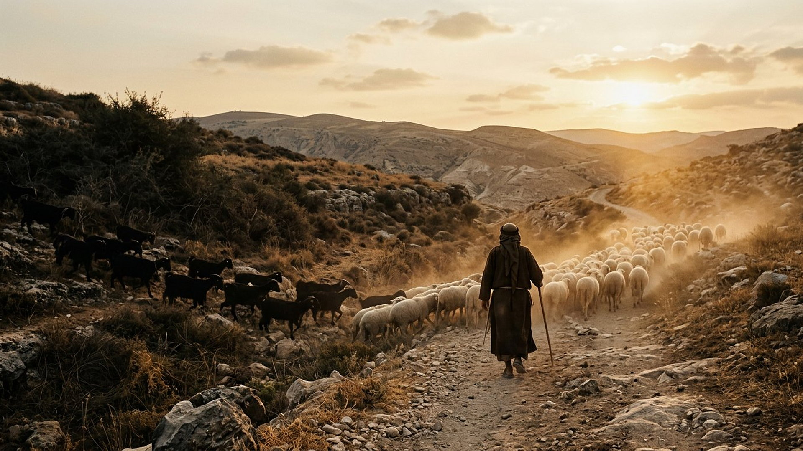
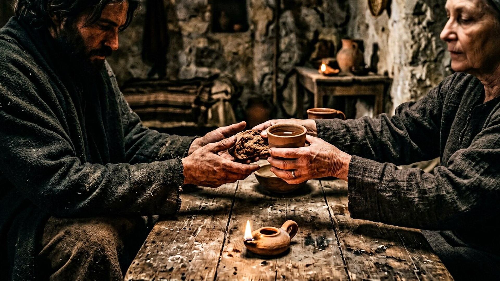

Salle 42 — Matthieu 25 À VENIR
Les brebis et les boucs : le jugement des nations
« Il séparera les uns d’avec les autres, comme le berger sépare les brebis d’avec les boucs. » — Matthieu 25:32 (d’après Segond 1910)
Reconstitution numérique — le tri du troupeau au soir : la parabole commence par une image que tout berger comprend.
Un jugement qui se joue pendant la tempête
Sur le mont des Oliviers, Jésus enchaîne trois paraboles du retour — les dix vierges, les talents, puis celle-ci, la plus solennelle : « Lorsque le Fils de l’homme viendra dans sa gloire, avec tous les anges, il s’assiéra sur le trône de sa gloire. Toutes les nations seront assemblées devant lui » (Matthieu 25:31-32). Le Fils de l’homme y juge des vivants, au moment de sa venue.
Dans la lecture retenue par ce musée, cette séparation a lieu pendant la grande tribulation (salle 15), après la chute de Babylone la Grande (salle 36) et avant Harmaguédon (salle 37) : les humains sont distingués selon leur attitude envers les « frères » du Christ — ceux qui portent son message dans la tempête. Les brebis survivront et recevront « le royaume préparé dès la fondation du monde » sur la terre (salle 40) ; les boucs, eux, s’en vont à la destruction. Ce jugement est distinct de celui du grand trône blanc (salle 33), qui concerne les morts relevés. La salle ne désigne ni personne vivante, ni appartenance : aucun visiteur ne peut s’en servir pour classer son voisin, et aucune date n’est avancée.
Le récit en cinq temps
Avancez dans la parabole, d’une station à l’autre.

Le banc des preuves : une parabole tôt transmise
DONNÉE HISTORIQUE
Matthieu dans le Papyrus 45 (EV-51)
Le Papyrus 45 (𝔓⁴⁵, Chester Beatty I, IIIe siècle) conserve de larges fragments des quatre Évangiles et des Actes, dont des portions de Matthieu. La parabole des brebis et des boucs appartient ainsi à un évangile recopié et diffusé dès les premiers siècles — un texte public, discuté dès l’Antiquité, et non une pièce tardive forgée pour les besoins d’une cause.
LECTURE PROPHÉTIQUE
Pourquoi « ses frères » au sens précis ?
Dans Matthieu, Jésus appelle « mes frères » ses disciples envoyés en mission (Matthieu 10:40-42 ; 28:10) : les recevoir ou les rejeter, c’est le recevoir ou le rejeter, lui. Le musée lit donc le critère comme l’attitude prise envers les porteurs du message pendant la tribulation — ce qui inclut concrètement les nourrir, les abriter, les visiter, les soutenir quand cela coûte.
DÉBATTU
La lecture « charité universelle », honnêtement
La lecture la plus répandue comprend « ces plus petits de mes frères » comme tous les démunis de la terre, et la scène comme le jugement dernier général, souvent confondue avec celui de Révélation 20 (salle 33). Elle a nourri des siècles d’hospitalité chrétienne — fruit que cette salle ne méprise pas. Le musée retient la distinction des deux jugements et le sens missionnaire de « mes frères », en signalant le débat.
Quatre clés pour ne pas se tromper de jugement
1. Des vivants pendant la tribulation, pas les morts
Les « nations » assemblées sont des vivants au moment de la venue ; les morts, eux, relèvent du grand trône blanc après les mille ans (salle 33). Confondre les deux scènes écrase toute la chronologie du musée.
2. Un critère de gestes, pas d’étiquettes
Le texte ne demande à personne son appartenance, mais relève des actes : donner à manger, donner à boire, accueillir, vêtir, visiter. Les brebis elles-mêmes s’étonnent : « Seigneur, quand t’avons-nous vu… ? » (25:37) — elles ont agi sans calculer leur dossier.
3. Ni personne classée, ni date
La séparation appartient au Fils de l’homme, pas aux lecteurs de la parabole. S’en servir pour déclarer telle personne « bouc » serait exactement l’usurpation que la salle refuse — et le récit ne contient aucune date à en tirer.
4. Les brebis héritent, elles ne conquièrent pas
« Venez, vous qui êtes bénis de mon Père ; prenez possession du royaume qui vous a été préparé » (25:34) : les survivants reçoivent la terre du Royaume (salles 40-41) comme un héritage, après qu’Harmaguédon a clos la tempête — elles n’ont pas combattu pour l’obtenir (salle 37).
Prescience n’est pas fatalité — des choix faits en pleine lumière
Le critère annoncé est connu d’avance, public, et tient à des gestes libres : nul n’est rangé à son insu par un destin anonyme. La prescience qui avertit du tri laisse à chacun, pendant qu’il est temps, la liberté de se tenir — ou non — du côté du pain partagé.
Salle 37 : Harmaguédon · Salle 33 : le grand trône blanc (l’autre jugement) · Salle 40 : le Royaume hérité
Écouter la salle
Transcription de la narration
Bienvenue dans cette salle du musée. Vous allez découvrir un berger qui sépare son troupeau sur un sentier de collines, des mains qui offrent du pain et de l’eau à un voyageur fatigué, puis deux chemins qui se séparent dans une vallée. Bonne visite. La visite avance en cinq étapes courtes. Prenez le temps d’observer chaque image et de lire les panneaux : ils présentent un récit prononcé sur une montagne il y a très longtemps, et les débats qu’il suscite encore.